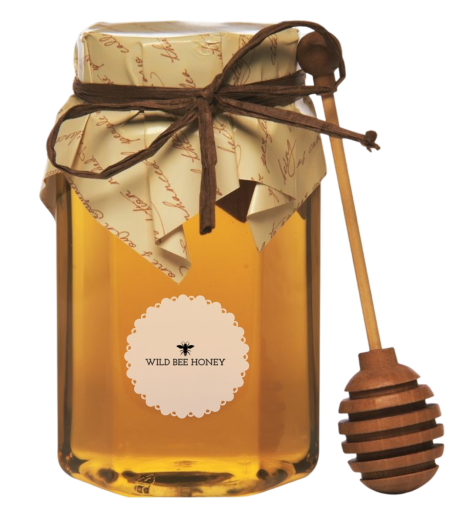

Miere de Salcam
Descriere
Mierea de Salcâm conține vitaminele B1, B2, B6, B12, enzime, flavoane, flavonoide, compuși aromatici, fitohormoni, acizi organici.
Această miere Nu este procesată industrial și termic, tocmai pentru a păstra toate calitățile terapeutice acestui Aliment-Medicament intacte.
Indicații terapeutice:
Mierea de salcâm este ”aur” pentru bolile cardiovasculare calmează tusea și sistemul nervos tratează astenia și nevrozele, gastrita hiperacidă, cancerul, ulcerul, ateroscleroza, reumatismul și tulburările de circulație este un excelent tonic pentru copii și pacienți în convalescență și gravide întărește sistemul imunitar